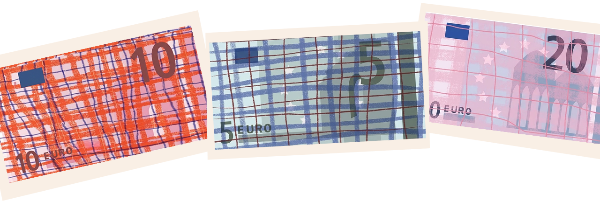
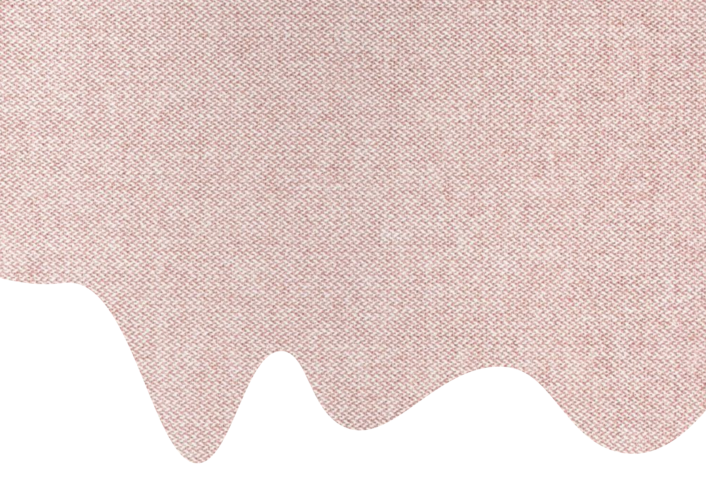
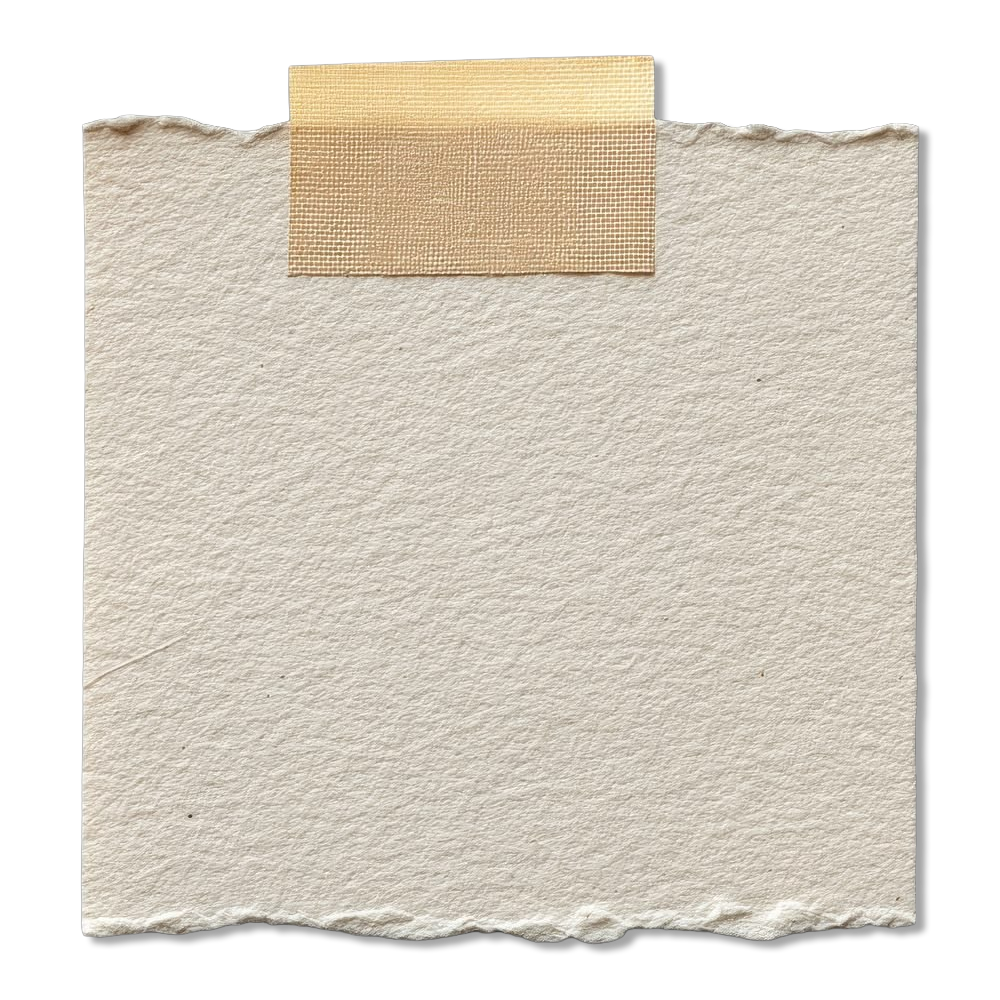

Uitputting van de aarde
Om al die kleren te maken, zijn ontzettend veel grondstoffen nodig. Denk aan gigantische stukken landbouwgrond voor katoen, maar ook aardolie om polyester van te maken.
Klik op een materiaal en ontdek de impact.
Deze multimedia story is het best te bekijken op volledig scherm en op een scherm van 14 inch.



Kleding wordt steeds sneller en goedkoper geproduceerd. Nieuwe trends en collecties volgen elkaar in hoog tempo op, waardoor we gewend zijn geraakt aan het idee dat kleding goedkoop is en we steeds iets nieuws kunnen kopen.
Klik op de labels om te zien welke impact deze stap heeft op ons en het milieu.


Katoenplanten hebben extreem veel water nodig, en ook het wassen en behandelen van stof kost duizenden liters per kledingstuk. Omdat kledingfabrieken en katoenvelden vaak in droge gebieden staan, worden lokale waterbronnen en meren in sneltempo leeggepompt. Het resultaat? Schoon drinkwater wordt schaars voor de mensen die er wonen. Bronnen European Environment Agency — watergebruik van textiel Mekonnen & Hoekstra — watervoetafdruk van gewassen

Om al die kleren te maken, zijn ontzettend veel grondstoffen nodig. Denk aan gigantische stukken landbouwgrond voor katoen, maar ook aardolie om polyester van te maken.
Klik op een materiaal en ontdek de impact.


Een kledingstuk dat je vandaag koopt, heeft vaak al tienduizenden kilometers afgelegd. Om de nieuwste trends razendsnel en goedkoop in de winkel te krijgen, draait de wereldwijde transportketen van fast fashion continu op volle toeren.

Die reis start al bij de allereerste grondstoffen. Katoen van de snikhete velden in India, fossiele olie uit het Midden-Oosten of ruwe wol uit Australië worden duizenden kilometers verplaatst naar spinnerijen en weverijen. Nog vóór er überhaupt één kledingstuk is genaaid, hebben de losse vezels er al een wereldreis op zitten. Bronnen Ellen MacArthur Foundation — A New Textiles Economy WRI & Apparel Impact Institute — Roadmap to Net Zero

Zodra het T-shirt af is, begint het tweede en grootste deel van de reis:
de route naar jouw kledingkast.
Zeevracht is de klassieke route van Azië naar Europa. Hoewel een containerschip per kledingstuk efficiënt lijkt, stootte de wereldwijde scheepvaart in 2018 ruim 1 miljard ton CO₂ uit. Die gigantische schaal en kilometerslange route laten een zware ecologische afdruk achter op onze oceanen. Bron IMO — Fourth Greenhouse Gas Study
Eenmaal aangekomen in de Europese haven is de reis nog niet voorbij. Via verdeelcentra, vrachtwagens en koeriers legt het kledingstuk de laatste kilometers af naar de winkelstraat of jouw voordeur.


In de EU gooit iedereen jaarlijks gemiddeld 16 kg textiel weg, waarvan 85% gewoon bij het restafval belandt. Zelfs onverkochte kleding wordt op grote schaal vernietigd, terwijl wereldwijd pas 1% wordt gerecycled tot nieuwe stof. Zo verandert een ‘goedkoop’ kledingstuk aan het einde van de rit in een enorme berg milieuvervuiling.

Wereldwijd werken zo’n 60 miljoen mensen, waarvan ruim 80% vrouw, in de kledingindustrie. In landen als Bangladesh, Cambodja en Myanmar verdienen zij gemiddeld minder dan een derde van een leefbaar loon. Dat is te weinig voor basisbehoeften zoals voedsel, huisvesting en zorg.
Om te overleven maken miljoenen naaisters verplicht overuren. Werkdagen van 12 tot 14 uur in snikhete fabrieken zijn eerder regel dan uitzondering. Zonder vast contract, vakbonden of sociale rechten houdt de drang naar goedkope mode zo een systeem van uitbuiting in stand.

Je hoeft niet perfect te kiezen. Begin met wat je al hebt: draag het langer, repareer het of geef het door.